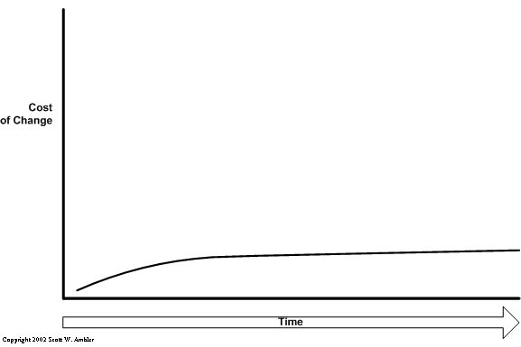
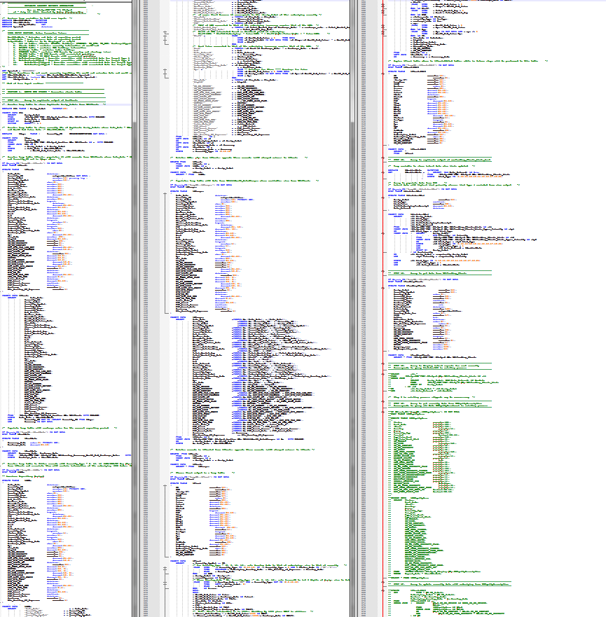

.NET Workshop
A Tested Codebase
Goals
Goal 1
To gain experience working with a tested code base as well as to write tests
Goal 2
To gain experience working with a well architected code base
Goal 3
To expose you to the latest programming technologies and techniques
Plan
- Into
- Coding Exercise 1 (Part 1)
- Fundamentals Review
- Coding Exercise 1 (Part2)
- Testing and TDD
- Coding Exercise 2 (Part 1)
- Good Architecture (Video)
- Coding Exercise 2 (Part 2)
A Coding Workshop
We want about half the time spending coding on the code base.
Sample Code Base
- Tiny Returns
- Calculates Portfolio / Benchmark Performance (Returns)
- Subset of Return Lite
- Net vs. Fees
Physical Layout
System Overview
Click to Build
ClickToBuild.bat
Coding Exercises
- Work as a Pair
- Exercise is not complete until build passes and code is reviewed.
- When one team is done OFFER help to the other working teams.
Continuous Integration
Team City
GIT for Source Control
Coding Exercise 1 (Part 1)
Add 6 Month Return to Excel Report
Story: As an Excel Report User, I want to see a 6 month return for both portfolios and benchmarks on the Excel report so we can win a new Australian client.
Sequence Diagram
DiagramQuestions
- How difficult was it to make the change?
- Did the change you made break the system?
- How confident where you that you did not break the system?
- How long was it before you could make the first change on your system?
Let's add tests for the changes.
But first...
We Must Understand...
- Test Types
- Testing Framework (XUnit.NET)
- Polymorphism
- Testing Doubles: Spies & Stubs
Test Types
- Unit Test
- Integration Test
Unit Test
“A unit test is a piece of a code (usually a method) that invokes another piece of code and checks the correctness of some assumptions afterward. If the assumptions turn out to be wrong, the unit test has failed. A unit is a method or function.”
Unit Test Example
[Fact]
public void IsValidFileName_BadExtension_ReturnsFalse()
{
LogAnalyzer analyzer = new LogAnalyzer();
bool result = analyzer.IsValidLogFileName("filewithbadextension.foo");
Assert.False(result);
}
Unit Tests
Pros
|
Cons
|
Integration
“Integration testing is testing a unit of work without having full control over all of it and using one or more of its real dependencies, such as time, network, database, threads, random number generators, and so on.”
Integration Tests
Pros
|
Cons
|
Integration Test Example
[Fact]
public void GetAllEntitiesShouldReturnCorrectNumberOfEntities()
{
var entityDataRepository = MasterFactory.GetInvestmentVehicleDataRepository();
var results = entityDataRepository.GetAllEntities();
Assert.Equal(results.Length, 5);
}
Which one is better?
Unit Tests or Integration Tests
Pro Tip:
Separate Unit and Integration Tests
Testing Framework (XUnit.NET)
Fact Attribute
[Fact]
public void GetAllEntitiesShouldReturnCorrectNumberOfEntities()
{
var entityDataRepository = MasterFactory.GetInvestmentVehicleDataRepository();
var results = entityDataRepository.GetAllEntities();
Assert.Equal(results.Length, 5);
}
Running the Tests
Validating the Results
Assert.Equal(result, 5);
One Class Per Test
Use Constructor and IDisposable
Polymorphism
Objects of a derived class may be treated as objects of a base class.
Cats and Dogs
abstract class Animal {
string Talk();
}
class Cat extends Animal {
string Talk() { return "Meow!"; }
}
class Dog extends Animal {
string Talk() { return "Woof!"; }
}
void LetsHear(Animal a) {
Console.WriteLine(a.Talk());
}
void main() {
LetsHear(new Cat());
LetsHear(new Dog());
}
Saving Customers
Questions...
- What file contains the tests for the modified class?
- Are they a unit or integration tests?
- How is Polymorphism used?
Test Doubles
AKA: Mocks
Spy
Saves the values of called methods.
Stub
Returns hard coded or "setup" values.
Is a spy.
Summary
- Unit Tests - Run Quickly, ID Problems Fast
- Integration Tests - Easier to Write, More True to Life
- Xunt.NET - "Fact" Denotes a Test
- Polymorphism - Objects of a derived class...
- Spy - Save Calls
- Stub - Return Hardcoded Value
Now ... Let's Add Tests
Coding Exercise 1 (Part 2)
Add 6 Month Return to Excel Report
Story: As an Excel Report User, I want to see a 6 month return for both portfolios and benchmarks on the Excel report so we can win a new Australian client.
Test Last
Test Driven Development
(TDD)
Red, Green, Refactor
Why do this?
No Tests...

With Tests...
String Calculator Example
- Create a simple String calculator with a method int Add(string numbers)
- The method can take 0, 1 or 2 numbers, and will return their sum (for an empty string it will return 0) for example "" or "1" or "1,2"
- Start with the simplest test case of an empty string and move to 1 and two numbers
- Remember to solve things as simply as possible so that you force yourself to write tests you did not think about
- Remember to refactor after each passing test
Coding Exercise 2 (Part 1)
Add Standard Deviation to Excel
Story: As an Excel Report User, I would like standard deviation calculated for one year added to the report.
Use TDD
- Write a test.
- Watch it fail
- Make the test pass.
- Improve the production code quality.
Untested Code
What if my code has no tests?
Testable vs. Untestable
Some code is testable. Some is not.
Testable?
public decimal GeometricallyLink(decimal[] values)
{
var returnValue = values[0];
for (int index = 1; index < values.Length; ++index)
returnValue = (1 + returnValue) * (1 + values[index]) - 1;
return returnValue;
}
It it testable?
Yes
Unit Test?
Yes
Integration Test?
Not Needed
Testable?
public bool IsLastDayOfMonth()
{
var firstOfDayCurrentMonth = new DateTime(DateTime.Now.Year, DateTime.Now.Month, 1);
var firstDayOfNextMonth = firstOfDayCurrentMonth.AddMonths(1);
var lastDayOfCurrentMonth = firstDayOfNextMonth.AddDays(-1);
return lastDayOfCurrentMonth == new DateTime(
DateTime.Now.Year, DateTime.Now.Month, DateTime.Now.Day);
}
It it testable?
Not Really
Unit Test?
Not a good one
Integration Test?
Not Needed
Indeterminate Functions
Hard to Test
Testable?
public class MyStack
{
private readonly List<string> _list;
public MyStack()
{
_list = new List<string>();
}
public void Push(string val)
{
_list.Add(val);
}
public string Pop()
{
var last = _list.Last();
_list.Remove(last);
return last;
}
}
}
It it testable?
Yes
Unit Test?
Yes
Integration Test?
Not Needed
Testable?
public class CodeBehind : System.Web.UI.Page {
public void btnFindUser_Click(Object obj, EventArgs e) {
if (Page.IsValid) {
// Do some user interface stuff
}
}
It it testable?
No
Program to an Interface, not an Implementation
Bad Microsoft
Testable?
public string GetTenMostExpensiveProductsSummary()
{
var conn = new SqlConnection("Server=(local);DataBase=Northwind;Integrated Security=SSPI");
conn.Open();
var cmd = new SqlCommand("sp_GetTenMostExpensiveProducts", conn);
cmd.CommandType = CommandType.StoredProcedure;
var rdr = cmd.ExecuteReader();
var stringBuilder = new StringBuilder();
while (rdr.Read())
{
stringBuilder.Append(
"Product: {0,-25} Price: ${1,6:####.00}",
rdr["TenMostExpensiveProducts"],
rdr["UnitPrice"]);
}
return stringBuilder.ToString();
}
It it testable?
Maybe
Unit Test?
No
Integration Test?
Possible
Database -> Known State
aka "Fixed Data"
Testable?
Testable?
public class CustomerMetricsCreator
{
public int GetCustomerCount()
{
var dataLayer = new DataLayer();
var allCustomers = dataLayer.GetAllCustomers();
return allCustomers.Count();
}
}
It it testable?
Maybe
Unit Test?
No
Integration Test?
Possible
Tight Coupling
Testable?
public class CustomerMetricsCreator
{
private readonly ICustomerRepository _customerRepository;
public CustomerMetricsCreator(
ICustomerRepository customerRepository)
{
_customerRepository = customerRepository;
}
public int GetCustomerCount()
{
var allCustomers = _customerRepository.GetAllCustomers();
return allCustomers.Count();
}
}
It it testable?
Yes
Unit Test?
Yes
Integration Test?
Possible
Coding Exercise 2 (Part 2)
Add Standard Deviation to Excel
Story: As an Excel Report User, I would like standard deviation calculated for one year added to the report.
You have been doing...
Extreme Programming
Feed Back